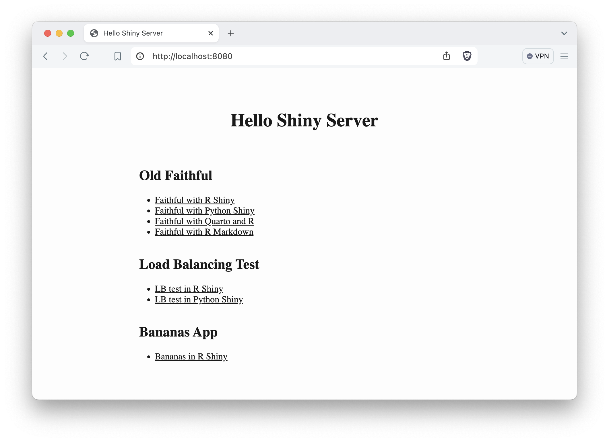
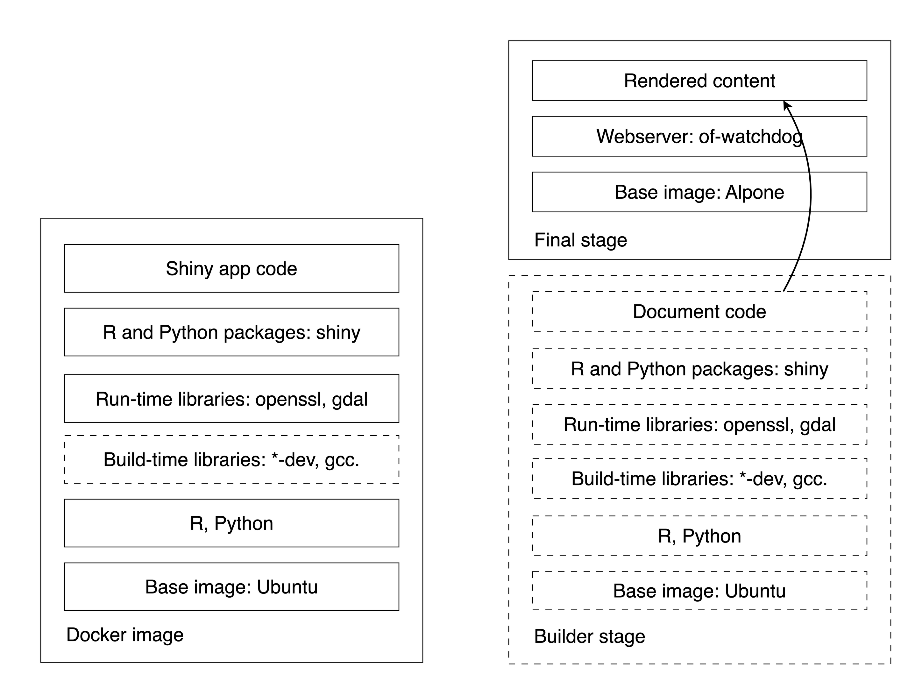

Chapter 17 Containerizing Shiny Apps
The previous Chapter 16 covers why images matter in a container context.
This chapter covers creating a container image for your Shiny app by creating a Dockerfile.
17.1 The Dockerfile
It is time to review the Dockerfiles line by line and learn about each of the different types of instructions and their uses. We organize the sections according to functional steps based on the Dockerfiles for our R and Python apps. The full Dockerfile reference can be found at https://docs.docker.com/reference/dockerfile/.
17.1.1 The Parent Image
The FROM instruction initializes a new build stage and sets the base
(FROM SCRATCH) or parent image (e.g. FROM ubuntu:24.04).
For the R version we used the FROM rocker/r2u:24.04 and for the Python version
we used FROM python:3.9. We will review the different parent images and
how to use multiple parent images in the same Dockerfile as part of a
multi-stage build later.
17.1.2 Metadata
The LABEL instruction is optional, it adds metadata to an image, e.g.
who to contact in case of issues or questions:
17.1.3 Dependencies
We often use the RUN instruction to install dependencies and use other
shell commands to set permissions to files, etc.
RUN executes a command in a new layer on top of the current
image. We used the RUN R -q -e "install.packages('shiny')" to install
the shiny R package, whereas the Python version used the
requirements.txt alongside the pip command as:
We also used RUN to add a user called app to a Linux user group called app.
This is needed because you do not want to run containers as the root user in
production. Running the container with root privileges allows unrestricted
use which is to be avoided. Although you can find lots of examples on the
Internet where the container is run as root, this is generally considered bad
practice. This is how we created the non-root user:
17.1.4 Directories and Files
Next we changed the working directory to /home/app that is the home folder
of the non-privileged app user:
The WORKDIR instruction sets the working directory for any
RUN, CMD, ENTRYPOINT, COPY and ADD instructions that follow it in the
Dockerfile.
The COPY instruction copies new files or directories from the source
and adds them to the file system of the container at the destination path.
The source here is the app folder inside the Docker build context.
The contents of the folder, including the Shiny app files, are copied.
The destination path . refers to the current work directory defined previously,
in this case, the /home/app folder.
Use an alternative format if the paths contain whitespace:
COPY ["dir with space", "."].
You would almost always use COPY in your Dockerfile, but a very similar
instruction is ADD. ADD allows the source to be a URL, a Git
repository, or a compressed file.
Wildcards, such as * for multiple characters and ? for single character,
are supported in COPY and ADD instructions. For example
COPY app/*.py . will copy only the Python scripts and nothing else.
Normally when the source does not exist docker build exits with an error.
An interesting feature of wildcards is that the build does not error
if there are no matching results. For example COPY *renv.lock . will copy
the renv.lock file if it exists, but the build won’t stop if it does not.
The owner of the files and directories at the destination is the root user.
If you want to set the user and the group so that the non-root user will
be able to access these resources you can use the optional --chown flag
that stands for change owner:
Here the --chown app:app sets the user and the group values to app.
This is equivalent to the following combination of COPY and RUN:
Similarly, use the --chmod flag to define read/write/execute permissions.
17.1.5 Switching User
The USER instruction sets the user name to use as the default user for
the ENTRYPOINT and CMD commands. We used USER app to switch to the
non-root app user.
17.1.6 Expose a Port
The EXPOSE instruction defines the port that Docker container listens on
at runtime. We chose port 3838 with the EXPOSE 3838 instruction.
This is the container port that we connect to using the
docker run -p 8080:3838 <image-name> command.
You can pick any port, but remember that exposing a lower port number, like
80 (the standard HTTP port) will require elevated privileges.
In general, we recommend using port numbers 1024 and above. Using lower
ports will result in failures with a non-root user, such as our app user.
17.1.7 Variables
The ENV instruction sets the default values for environment variables.
We set two variables for the Python app to allow configs to be written
for matplotlib by the app user:
These environment variables will be part of the final image, so do not use ENV
to add secrets to the image at build time. Such environment variables should be
added at runtime, e.g. with docker run --env TOKEN=<token-value> <image-name>
or using a file as docker run --env-file .env <image-name> which will
read the variables from the .env file.
The ARG instruction defines a variable that users can pass at build-time.
For example, adding ARG GITHUB_PAT to the Dockerfile
would allow you to use the remotes::install_github() function to install
an R package from a private GitHub repository. You can provide the token
value to docker build as:
The token value will not be available in the container at runtime.
17.1.8 Executable and Command
We got to the end of the Dockerfile. This is where we define the
process that is executed inside the container at run time via the
ENTRYPOINT instruction. This is often omitted. In that case, the default
executable is set to /bin/sh -c that is the shell executable.
Shell is a basic command-line interpreter and the -c
flag indicates that the shell will read the commands to execute from a string.
This string is provided through the CMD instruction.
For example we can add CMD uvicorn app:app --host 0.0.0.0 --port 3838
as the default set of arguments supplied to the ENTRYPOINT process
to start the Python Shiny app.
The RUN, CMD, and ENTRYPOINT instructions have two possible forms.
The shell form is used mostly with the RUN instruction because it allows
useful shell features like piping the output and chaining commands.
The shell form is written without square brackets and it would look like this
for the R Shiny app:
This command will execute as a child processes of the shell, and as such,
signals like CTRL+C will not be forwarded to the child process by the shell.
This is why it is recommended to use the so-called “exec” form for the CMD and
ENTRYPOINT instructions. The “exec” form is written between square
brackets. Here it is for the R version:
And for the Python version:
When we discussed local hosting of the Shiny apps we did not review all the
possible arguments for the R and Python commands. Two options here beg for introduction.
The host defines the IP address that the app listens on. The default host
value is 127.0.0.1 (also known as localhost or loopback address).
If we leave the host at its default value, we will not be able to access the
container from outside because localhost can only be accessed from the same
address. This is the reason why we need to set it to 0.0.0.0 which can be
accessed from outside of the container.
The other important argument is the TCP port that the application is listening
on. If the port is not provided for the R Shiny command, Shiny will pick a
random port number. We obviously do not want to guess this port, so we need to
set it. The 3838 port number is the same as the number we exposed via the
EXPOSE 3838 instruction.
It is possible to use an environment variable for the port number
and substitute it in the CMD command:
This way the default value is set to 3838, but you can override it at runtime
as docker run --env PORT=5000 <image-name>.
17.2 Parent Images
We have reviewed Docker basics and how to dockerize a very simple Shiny app. For anything that is a little bit more complex, you will have to manage dependencies. Dependency management is one of the most important aspects of app development with Docker. And it begins with finding the right parent image as the basis of the rest of your Dockerfile.
The ground zero for Docker images is the reserved and explicitly empty
image called scratch. FROM scratch is used for hosting super minimal images
containing a single binary executable or as the foundation of common base images
such as debian, ubuntu or alpine.
Debian is a Linux distribution that’s composed entirely of free and open-source software and is a community project. Ubuntu is derived from Debian and is commercially backed by Canonical. Ubuntu uses the same APT packaging system as Debian and many packages and libraries from Debian repositories. Both of these Linux distributions are loved for their versatility and reliability, and the huge user base ensures first class community support.
Alpine Linux is a minimal distribution independent of Debian and other distributions. It was designed with a focus on simplicity, security, and efficiency. This distribution has a very compact size, and therefore is a popular choice for embedded systems and IoT devices. This distribution is also community maintained.
Here are the sizes for these three images. Debian is the largest, Ubuntu in the middle, and the Alpine being more than 10 times smaller:
REPOSITORY TAG IMAGE ID CREATED SIZE
debian 12.6 7b34f2fc561c 7 days ago 117MB
ubuntu 24.04 35a88802559d 4 weeks ago 78.1MB
alpine 3.20 a606584aa9aa 2 weeks ago 7.8MBMany of the commonly used R and Python parent images use Debian/Ubuntu or Alpine as the starting point. The general trade-off between these two lineages comes down to convenience vs. minimalism. Ubuntu and its derivatives tend to be much larger in size, but build times can be considerably faster due to very mature package management system and the availability of pre-built binaries.
Alpine-based images, however, tend to be much smaller, almost bare bones. Alpine uses different compilers than Ubuntu so you’ll often have to build and compile your packages from source. This can be tedious and time consuming. However, its small size reduces the surface area for potential attackers and as a result the images tend to be less vulnerable.
The final image size is important to consider, but images based on the same parent image share lots of their layers anyways, so the images can pack much tighter on your hard drive than you might think based on their size without subtracting common layers. Also,the size advantage of the Alpine distribution evaporates quickly as you start adding R and Python libraries. Some packages will take up more space than the parent image itself.
17.2.1 R Parent Images
Let’s see some of the most popular base R images based. Here is the
output from docker images after pulling each of these Docker images:
REPOSITORY TAG IMAGE ID CREATED SIZE
r-base 4.4.1 16511f39cdb4 3 weeks ago 833MB
rocker/r-base 4.4.1 22b431698084 3 weeks ago 878MB
rocker/r-ver 4.4.1 9bb36eff1caa 3 weeks ago 843MB
rocker/shiny 4.4.1 a90ccd5c09b9 3 weeks ago 1.58GB
rocker/r2u 24.04 1441545ed6df 2 weeks ago 800MB
rhub/r-minimal 4.4.1 1e280d0205b7 3 weeks ago 44.9MBThe official r-base image is an R installation built on top of Debian. It is
maintained by the Rocker community (https://rocker-project.org/, Boettiger and Eddelbuettel (2017)).
This r-base image is like the rocker/r-base, these two images are built
from the same Dockerfile, but with different build tools.
The Debian Linux distribution is more cutting edge than Ubuntu.
This means it has unstable repos added and it receives updates faster.
It is for those who like to live on the cutting edge of development.
For those who value stability more, the Ubuntu based images could be better
suited. Such as the Rocker versioned stack, rocker/r-ver, which emphasizes
reproducibility. This stack has both AMD64 and experimental ARM64 support
for R version 4.1.0 and later. For the AMD64 platform, it serves compiled
binaries of R packages making package installs faster.
The default CRAN mirror for rocker/r-ver is set to the Posit Public Package Manager
(P3M, https://p3m.dev/, previously called RStudio Package Manager or RSPM).
To ensure reproducibility, the non-latest R version images
install R packages from a fixed snapshot of the CRAN mirror at a given date.
So you’ll end up with the same package versions no matter when you build your image.
The rocker/shiny image is based on the rocker/r-ver stack and comes with
Shiny related packages and Shiny Server Open Source installed. This makes it the
beefiest of all the images presented. It has 68 packages available instead of
the 31 within the r-base and r-ver stacks (14 base and 15 recommended packages).
The images so far have been tagged by the R version that is inside the image,
e.g. 4.4.1.
The rocker/r2u is based on Ubuntu as well, and it brings Ubuntu binaries for
CRAN packages fully integrated with the system package manager (apt).
When you use install.packages() it will call apt in the background.
This has the advantage that system dependencies are fully resolved, i.e. no need
to guess and manually install them. Installations are also reversible.
It uses the CRAN mirror at https://r2u.stat.illinois.edu.
Keep in mind that packages and R itself are generally the highest available version.
Therefore, the image tag is not based on the R version but based on the
Ubuntu LTS (Long Term Support) version, like 24.04.
All the Rocker images pack utilities that help with command line tasks,
such as installing packages via install.r and installGithub.r,
all part of the littler project (Eddelbuettel and Horner 2024). There is even a command line
tool for Shiny, so instead of
CMD ["R", "-e", "shiny::runApp(host='0.0.0.0', port=3838)"]
you can use CMD ["shiny.r", "-o", "0.0.0.0", "-p", "3838"] in your Dockerfile.
Finally, the rhub/r-minimal image is based on Alpine Linux and is the tiniest
available image for R. This feat is achieved by not having recommended R packages
installed (it has a total of 14 required packages), it does not have any
documentation or translations, no X11 window support.
It does not even have C, C++ or Fortran compilers. So if an R package relies on
compiled code, first you have to install a compiler, then later uninstall it
to keep the image size minimal. The installr script provided as part of the
image helps with the installation and clean-up of build time dependencies,
see installr -h for the available options.
If you are looking for Linux distributions other than what we listed so far
(Debian, Ubuntu, Alpine), take a look at the
rstudio/r-base images
that bring versioned base R to many Linux distributions, e.g. CentOS,
Rocky Linux, and OpenSUSE.
17.2.2 Python Parent Images
The official Python images are maintained by the Python community and are either based on Debian or Alpine Linux. Here are the most commonly used variants:
REPOSITORY TAG IMAGE ID CREATED SIZE
python 3.9 8912c37cec43 12 days ago 996MB
python 3.9-slim b4045d7da52e 12 days ago 125MB
python 3.9-alpine 893ee28ab004 12 days ago 53.4MBThe python:<version> image is the largest and is the most general supporting
all kinds of use cases and is recommended as a parent image. It contains the
common Debian packages and compilers.
The python:<version>-slim version contains only the minimal Debian packages
needed to run Python itself. It does not contain the compilers for modules
written in other languages. This is the reason for the image’s reduced size.
The python:<version>-alpine is based on Alpine and therefore is the smallest.
It is similarly bare bones as the minimal R image.
17.3 Installing System Libraries
System libraries are required for different purposes. Some libraries are needed
during build time. While others are needed at run time.
Say your R or Python package requires compilation or needs
to dynamically link to other system libraries. In these cases you have to
build your package using compilers (C, C++, Fortran, Rust) and other build
time dependencies. System libraries used at build time includes header files and
tend to have extra dependencies. These build time system libraries are
named with a *-dev or *-devel postfix.
Once your R or Python package has been compiled, you don’t need the build time
libraries any more. However, you need the run time libraries. For example
if your package needs to be built with libcurl4-openssl-dev, the run time
dependency becomes libcurl4. The run time dependencies tend to be much smaller
and have fewer dependencies. These will have no conflict with other run time
libraries because of the lack of headers included.
17.3.1 Manual Installation
The Python Wheels
project offers binary Python packages and it automatically used if possible with the
pip package manager. R binaries can be found on
CRAN for Windows and Mac OS X. But CRAN does not offer binaries for various
Linux distributions for the obvious complexity involved in that.
The Posit Public Package Manager provides pre-built binary
packages for R and Python. It supports various Linux distributions, including
Debian and Ubuntu. The R Universe
project provide binaries for CRAN and GitHub packages for Windows, Mac OS X,
and in most cases for WebAssembly that is suitable for Shinylive applications.
The R Universe project only provides binaries for R packages on Ubuntu
using the latest R version.
R and Python packages, once compiled into a binary file, provide metadata about the run time dependencies. You can find the required system libraries on the website of a given repository or package manager. Alternatively, you can try installing the package without its requirements and follow the string of error messages to see what it is that you need to install as a prerequisite.
This GitHub repository lists system requirements for R packages:
rstudio/r-system-requirements.
The primary purpose of this database is to support the Posit Public Package Manager.
To get programmatic access to the database, you can call the
Posit Public Package Manager’s API to request the system requirements.
For example, for the curl R package (Ooms 2024), you can query the API as
https://p3m.dev/__api__/repos/1/packages/curl/sysreqs?distribution=ubuntu.
Replace the curl and ubuntu parts to get results for other R packages and
Linux distributions. The HTTP GET request will result in a JSON response listing
the libraries with the install script needed on Ubuntu (try pasting the
link into the browser address line):
{
"name": "curl",
"install_scripts": [
"apt-get install -y libcurl4-openssl-dev",
"apt-get install -y libssl-dev"
]
}You can also utilize the pak R package (Csárdi and Hester 2024) to query system requirements:
pak::pkg_sysreqs("curl", sysreqs_platform="ubuntu")
# -- Install scripts ---------------------------- Ubuntu NA --
# apt-get -y update
# apt-get -y install libcurl4-openssl-dev libssl-dev
#
# -- Packages and their system dependencies ------------------
# curl - libcurl4-openssl-dev, libssl-devInclude these libraries in your Dockerfile as:
RUN apt-get update && \
apt-get install -y --no-install-recommends \
libcurl4-openssl-dev \
libssl-dev \
&& rm -rf /var/lib/apt/lists/*When using apt-get (the older and stable version of apt) the first command is
always apt-get update which look for updates in the the package lists of
the package repositories. This way the system will know if an update is necessary
and where to find the individual packages. Next apt-get install <package-name>
is called with a few flags: -y means that we answer yes to all the prompts,
whereas --no-install-recommends will prevent unnecessary recommended packages
from being installed. The last bit cleans up the package lists downloaded by
apt-get update which are stored in the /var/lib/apt/lists folder.
All these three commands are chained together with && and we used \ for
breaking up single line commands to multiple lines for better readability
(the backslash escapes a newline character). This arrangement helps organize
the packages and you can also comment them out as needed.
You could put all of these chained commands in a separate RUN
line, but that is not recommended. Having a single RUN instruction will
lead to a single image layer. But what is most important is that the update and
install steps should not be separated. Imagine that you update the package lists
and now the resulting layer is added to the Docker cache.
The next time you add another package to install and rebuild your image.
The update command is cached and will not be rerun by default. As a result,
you might end up with an outdated version of the package.
17.3.2 Automated Dependency Resolution with r2u
If you are using R on Ubuntu, the r2u
project greatly facilitates dependency management.
It uses the Debian package format for R packages for latest R version on
various Ubuntu LTS platforms. This resolves all the system dependencies through
using the .deb binary package format that combines together the pre-built binary
package with the metadata about the dependencies. Then the Debian/Ubuntu package
manager (apt) can do the rest.
The binary packages are based on P3M where available or built natively.
Selected BioConductor packages are also built natively on the project servers.
The server hosting the .deb files is set up as a proper apt repository
with a signed Release file containing metadata that can be used to
cryptographically validate every package in the repository. This file guarantees
that the packages you receive are the one you expected and there has been no
tampering with it during download.
Because the R packages now live as first class
citizens on Ubuntu, uninstalling packages would not unnecessarily remove the
shared dependencies that other packages depend on. With the r2u setup and
using the rocker/r2u images, you can simply call install.packages("curl")
and apt will sort out the dependencies for you in the background.
17.3.3 Dependencies on Alpine Linux
The Alpine Linux has a package manager called apk that is different from
Debian’s and Ubuntu’s apt. This likely means that you might have to work
harder to find all the Alpine-specific dependencies. You can still use the
tools previously mentioned, but will have to find the library for Alpine.
You can also follow the breadcrumbs of the error messages of missing dependencies.
However, the general idea is similar when it comes to working with the Dockerfile:
FROM rhub/r-minimal:4.4.1
RUN apk add --no-cache --update-cache \
--repository http://nl.alpinelinux.org/alpine/v3.11/main \
autoconf=2.69-r2 \
automake=1.16.1-r0 && \
installr -d \
-t "libsodium-dev curl-dev linux-headers gfortran autoconf automake" \
-a libsodium \
shiny plotly e1071
[...]First we declare the minimal parent image, then use a RUN instruction to add
libraries from the Alpine repository. autoconf and automake is required for
building the R packages (shiny, plotly, and e1071). This example is
taken from the minimal Dockerfile for the Bananas example app.
The next pieces uses the istallr utility that comes with the rhub/r-minimal
image and its usage is explained on the GitHub site: https://github.com/r-hub/r-minimal.
The -d flag will install C and C++ compilers (gcc, musl-dev,g++)
temporarily, i.e. those will be removed after the successful
compilation and installation of the R packages.
The -t option lists Alpine packages to be installed temporarily (a.k.a.
build time dependencies), and the -a option lists Alpine packages to keep
(a.k.a. run time dependencies). The built in cleanup feature keeps the image
sizes small in line with the goal of the parent image’s purpose.
You can also list not only CRAN packages but different “remotes”, like
tidyverse/ggplot2 for development version of ggplot2 from GitHub,
or local::. to install from a local directory.
The rest of the Dockerfile follow the same patterns as what we saw before. Adding
a non-root user, defining the work directory, copying the Shiny app files
from the build context to the image’s file system, setting owners for the files,
switching to the non-root user, exposing port 3838 and defining the default
command to run that calls shiny::runApp():
[...]
RUN addgroup --system app && \
adduser --system --ingroup app app
WORKDIR /home/app
COPY app .
RUN chown app:app -R /home/app
USER app
EXPOSE 3838
CMD ["R", "-e", "shiny::runApp(host='0.0.0.0', port=3838)"]The Dockerfile for the Faithful Shiny app (https://github.com/h10y/faithful) is somewhat simpler:
FROM rhub/r-minimal:4.4.1
RUN installr -d \
-t "zlib-dev cairo-dev" \
-a "cairo font-liberation" \
Cairo \
shiny
RUN addgroup --system app && \
adduser --system --ingroup app app
WORKDIR /home/app
COPY app .
RUN chown app:app -R /home/app
USER app
EXPOSE 3838
CMD ["R", "-e", "shiny::runApp(host='0.0.0.0', port=3838)"]The reason why we need the Cairo package (Urbanek and Horner 2023) besides shiny is because the minimal
image has no X11 graphic device support which is used to display base R plots, like histograms.
Instead of X11, we can use the Cairo Graphics Library. You can see how we list
the build time cairo-dev library and the run time cairo for the R package.
The installation of the system packages and the general lack of available
binary packages contribute to the longer build times. The Faithful example
took 5 minutes to build with rhub/r-minimal compared to 16 seconds with
rocker/r2u and the final image size was 230 MB compared to 975 MB.
The Bananas app took 10.4 minutes vs. 28 seconds and resulted in an image of
size 113 MB as opposed to 909 MB.
As you can see, the image build time is significantly longer, while the minimal image size is multiplying relative to the parent image’s 45 MB size. The absolute increase in the Ubuntu based image’s size is similar but it is less noticeable in relative terms.
Your Shiny apps are likely to have more dependencies that the examples we are using in this book. You will have to decide if the benefits that a minimal image provides will overweight the increased complexity and development time required to maintain minimalist Shiny images.
17.4 Installing R Packages
The wealth of contributed R packages can supercharge Shiny app development. This also means that you have to manage these dependencies. In the previous sections, we have already hinted at installing these packages. We will now see the different ways of installing R packages.
17.4.1 Explicitly Stating Dependencies
The first approach is to use RUN instructions in the Dockerfile to
install the required packages. You can use the R -q -e "<expression>"
pattern to use any R expression you would normally use in your R sessions
to install packages. The -q flag stands for quiet and means to not print out
the startup message. The -e option means to execute the R expression that
follows it and then exit. The Rscript -e "<expression>" is another way to
evaluate the expressions without echoing the expression itself.
Most often we use the built in install.packages()
function and the different options from the remotes package (Csárdi et al. 2024).
RUN R -q -e "install.packages(c('shiny', 'remotes'))"
RUN R -q -e "remotes::install_github('tidyverse/ggplot2')"
RUN R -q -e "remotes::install_local('.')"The Rocker images have the littler command line utility installed.
The previous code piece can be written as:
RUN install2.r --error --skipinstalled shiny remotes
RUN installGithub tidyverse/ggplot2
RUN install2.r "."The --error flag will throw an error when installation is unsuccessful
instead of a warning, --skipinstalled will skip installing already installed
packages.
If installing from a private GitHub repository, remotes is going to use
the GITHUB_PAT environment variable to authenticate with GitHub to be able to
download and install the package. You have to add the following line to your
Dockerfile before the RUN instructions that define the install from GitHub:
To pass the GITHUB_PAT at image build, use the following commands:
export GITHUB_PAT=ghp_xxxxxxxxxx
docker build -t <image-name> --build-arg="GITHUB_PAT=${GITHUB_PAT}" .The pak R package (Csárdi and Hester 2024) is planned to replace remotes in the future.
It provides very similar functionality and improvements, like parallel downloads,
caching, safe dependency solver for packages and system dependencies using
the P3M database by creating an installation plan before downloading any packages.
Not relevant for Linux containers, but pak can even handle locked package DLLs
on Windows. Let’s see how these common install statements would look using pak
(you don’t need remotes because of using pak):
RUN R -q -e "install.packages('pak')"
RUN R -q -e "pak::pkg_install('shiny'))"
RUN R -q -e "pak::pkg_install('tidyverse/ggplot2')"
RUN R -q -e "pak::pkg_install('.')"The installr utility shipped with the rhub/r-minimal image uses pak
to install packages. The -p flag will remove pak after the installation.
You can do:
You can pin package versions using Git references, e.g. tidyverse/ggplot2@v1.0.0,
or using remotes::install_version().
These functions allow you to provide repositories as arguments. But more often,
the repositories are set globally as part of options(). You can include
the list of repositories in the Rprofile.site file:
# Rprofile.site
local({
r <- getOption("repos")
r["p3m"] <- "https://p3m.dev/cran/__linux__/noble/2024-07-09"
r["archive"] <- "https://cranhaven.r-universe.dev"
r["CRAN"] <- "https://cloud.r-project.org"
options(repos = r)
})The P3M repository is set for Ubuntu 24.04 (Noble) with a snapshot of
CRAN taken on July 9th, 2024. This effectively freezes package versions to
enhance reproducibility. This way of pinning maximum package versions is also
called “time travel”. The CRAN Haven
repository is for recently archived CRAN packages. These archived packages might
find their way back to CRAN after addressing the issues for which those got
archived. This repository can handle such temporary inconveniences.
COPY this file into the /etc/R folder on the Rocker images:
COPY Rprofile.site /etc/RAs you develop your Shiny app, you will have to occasionally update the Dockerfile
to add manually in any new dependencies. If you forget to do this you will be
reminded by an error the next time you build your Docker image and run your app.
17.4.2 Using the DESCRIPTION File
You have seen how to use remotes::install_local() to install a dependency
from a local directory or a .tar.gz source file. The list of packages to be
installed is determined by the DESCRIPTION file that is at the base of any
package folder. It lists the dependencies of the packages.
Packages listed under the Imports field are installed and needed by the
package. Other packages listed under the Suggests field are needed for
development but are not essential for using the package.
A commonly used hack in the R community is to hijack the package development
tooling to simplify installation of the codebase even if it is
not necessarily structured as a package. The only thing you need for
remotes::install_local() and similar functions to work is the
DESCRIPTION file. You don’t even need all the customary fields like title,
description, or package maintainer in this file.
For the Bananas app, we need shiny, plotly and the e1071 package listed
under Imports. Put this in the DESCRIPTION file:
Imports: e1071, plotly, shinyIn the Dockerfile you need to COPY the DESCRIPTION file into the
file system of the image, then call the remotes::install_deps() function.
The upgrade='never' argument will prevent installing newer versions of existing
packages, thus cutting down unnecessary install time:
FROM rocker/r2u:24.04
COPY app/DESCRIPTION .
RUN R -q -e "remotes::install_deps(upgrade='never')"
[...]You can use the Rprofile.site to specify your preferred repositories.
The remotes functions will respect those settings.
Using the DESCRIPTION file lets you record the dependencies
outside of your Dockerfile. As you develop your Shiny app, you have to update
the DESCRIPTION. When the file changes, Docker will invalidate the cache and
install the dependencies with the new packages included.
17.4.3 Using renv
The renv package (Ushey and Wickham 2024) is a dependency management toolkit for R.
You can create and manage R libraries in your local project and record the state
of these libraries to a lockfile. This lockfile can be used later to restore
the project, thus making projects more isolated, portable, and reproducible.
If you are using renv with your Shiny projects, you are probably already
familiar with the workflow. You can discover dependencies with renv::init()
and occasionally save the state of these libraries to a lockfile with
renv::snapshot(). The nice thing about this approach is that the exact version
of each package is recorded that makes Docker builds reproducible as well.
The renv package has a few different snapshot modes.
The default is called “implicit”. This mode adds the intersection of all
your installed packages and those used in your project as inferred by
renv::dependencies() to the lockfile.
The other mode is called “explicit” snapshot that only captures packages
that are listed in the project DESCRIPTION.
The “custom” model lets you specify filters for modifying the implicit
snapshot, so that you will not end up with the kitchen sink of packages in
your Docker image. Read the Using renv with Docker vignette of renv for
more useful tips.
Once you have the lockfile in your project folder, you can use it like this:
[...]
RUN install.r renv
COPY app/renv.lock .
RUN R -q -e "options(renv.consent=TRUE);renv::restore()"
[...]You have to install renv, copy the renv.lock file over, and use the
renv::restore() command. The renv.consent option gives consent to renv
to write and update certain files.
renv pins the exact package versions in the lockfile. This is necessary for
reproducibility. But full reproducibility is much harder than just the version
of R and the package versions. You have to think about the operating system,
your system dependencies, and even the hardware (Rodrigues 2023).
Exact package versions could take quite long to install. The reason for that is
that binary version of the packages might disappear from the package repositories.
In that case, renv will install it from source and it will need possible
build time dependencies. The older the lockfile gets, the more problematic
it can be to install without hiccups.
17.4.4 Using deps
renv goes to great lengths to make your R projects perfectly
reproducible. This requires knowing the exact package versions and the
source where it was installed from (CRAN, remotes, local files). This
information is registered in the lock file, which serves as the manifest
for recreating the exact replica of the environment.
Full reproducibility is often required for reports, markdown-based documents, and scripts. These are loosely defined projects combined with strict version requirements, often erring on the side of “more dependencies are safer”.
On the other end of the spectrum, you have package-based development.
This is the main use case for dependency management-oriented packages,
such as remotes and pak.
In this case, exact versions are managed only to the extent of avoiding breaking changes (given that testing can surface these). So what we have is a package-based workflow combined with a “no breaking changes” philosophy to version requirements. This approach often leads to leaner installation.
If you are developing your Shiny app as an R package, then the
package-based development is probably the way to go. You already have a
DESCRIPTION file, so just keep developing.
But what if you are not writing an R package and wanted to combine the best
of both approaches? A loosely defined project with just strict-enough
version requirements without having to manage a DESCRIPTION file.
Why would you need a DESCRIPTION file when you have no R package?
Also, there is a lot that a DESCRIPTION file won’t do for you.
You can manage dependencies with the deps (Sólymos 2024) package by decorating your
existing R code with special, roxygen-style comments. For example, here is
how you can specify a remote, and alternative CRAN-like repository, pin
a package version, or install from a local source:
#' @remote analythium/rconfig@CRAN-v0.1.3
rconfig::config()
#' @repo sf https://r-spatial.r-universe.dev
library(sf)
#' @ver rgl 0.108.3
library(rgl)
#' @local mypackage_0.1.0.tar.gz
library(mypackage)You can exclude development packages with the @dev decorator and list
system requirements following the @sys decorator.
deps helps to find all dependencies from our files using renv::dependencies().
It writes these dependencies into the dependencies.json file, including the
information contained in the comments when using the deps::create() function.
The decorators make your intent explicit, just like if we were writing an
R package. But we do not need to manually write these into a file and
keep it up-to-date. We can just rerun create() to update the JSON
manifest file.
create() crawls the project directory for package dependencies. It
will amend the dependency list and package sources based on the
comments. The other function in deps is install() which looks for the dependencies.json
file in the root of the project directory (or runs create() when the JSON file
is not found) and performs dependency installation according to the
instructions in the JSON file.
Here is the Dockerfile usage where first we install the deps package and
copy the dependencies.json. The next RUN instruction is needed if you
had system requirements specified via @sys. The jq package is used to
parse the JSON and install any of these libraries. Finally, the line with
deps::install() that performs the R package installation based on the JSON file:
[...]
RUN install.r deps
COPY app/dependencies.json .
RUN apt-get update && \
apt-get install -y --no-install-recommends \
jq
RUN apt-get update && \
apt-get install -y --no-install-recommends \
$( jq -r '.sysreqs | join(" ")' dependencies.json )
RUN R -q -e "deps::install()"
[...]The deps package comes with a small command line utility that can be
added to the dockerfile to simplify the installation process:
FROM rocker/r2u:24.04
RUN install.r pak rconfig deps
RUN cp -p \
$(R RHOME)/site-library/deps/examples/03-cli/deps-cli.R \
/usr/local/bin/deps-cli
RUN chmod +x /usr/local/bin/deps-cli
COPY app .
RUN deps-cli all
[...]The deps-cli all command will analyze dependencies and install system and R
dependencies in 1 line. It also looks for the following files before attempting
to auto-detect dependencies in the absence of the dependencies.json:
renv.lock, pkg.lock, and DESCRIPTION. pkg.lock is the lockfile created
by pak.
17.5 Python Requirements
When working with Python projects, an application might require
dependencies to run. This is dependencies are stored in a file named requirements.txt
and the dependencies can be installed with the pip install command.
requirements.txt is a plain text file used to list the Python packages your
project depends on. It contains that the required dependencies to run your
application helps consolidate all the dependencies to a single file.
Each line in the file specifies a package and, optionally, a version number.
Here’s a simple example of what a requirements.txt might look like:
shiny==1.0.0
shinylive>=0.5.1
shinywidgetsIn the example above:
- The shiny library is pinned to version 1.0.0
- The shinylive library is required to be at least version 0.5.1
- The shinywidgets will be installed at its latest available version
To install the dependencies in requirements.txt, you would run
pip install -r requirements.txt which installs
all the packages in the requirements.txt file.
We can install the dependencies within a Docker container by doing the following in a Dockerfile:
FROM python:3.9
[...]
COPY app/requirements.txt .
RUN pip install --no-cache-dir -r requirements.txt
COPY app .Here in the Dockerfile, we copy the requirements.txt file to the Docker image
with the COPY command. Then the dependencies are installed in the docker image
with the RUN pip install --no-cache-dir command.
The --no-cache-dir option prevents pip from storing the downloaded package
files in the cache, which helps reduce the image size.
Finally, to not repeatedly install the Python dependencies in requirements.txt,
we copy the rest of the apps source code with COPY app .. By copying
requirements.txt and running pip install before copying
the rest of the application code, Docker can cache the dependencies layer.
When you update the requirements file, the image needs to be rebuilt to install
the new packages and versions. The rebuild will have to download all the common
packages and packages that haven’t changed. To avoid this, you can map the
pip cache directory to a directory on the Docker host machine. This can speed
up the build process and save you space in the final image. You can let
BuildKit manage the cache for you. Notice that we dropped the --no-cache-dir
flag so pip now will create the cache:
COPY app/requirements.txt .
RUN --mount=type=cache,target=/root/.cache/pip \
pip install -r requirements.txtYou do not need to deal with virtual environments when using Docker, because the whole point of using Docker is to isolate environments. We tend to put only one project in a Docker image, and we can create multiple images for the different projects and environments and tag them appropriately.
17.6 Classic Shiny Apps
Shiny apps require a runtime environment on a host server that can support the HTTP and websocket connections required for R and Python to communicate with the client (Fig. 5.1). Now that we have reviewed Shiny app development and general principles of working with Docker, we can dive into specific examples. We will use the Old Faithful example. You can follow along using the code in the repository at https://github.com/h10y/faithful.
There are many examples organized into folders inside the repo. Consult the
readme file about each of these. In general, we provide Docker images
for the dynamic Shiny app examples in the form of
h10y/faithful/<folder-name>:latest. You can use docker run to pull and
start the Shiny app as:
Visit http://localhost:8080 in your browser to try the app.
17.6.1 R
The simplest containerized app follows the Dockerfile examples for R that you
have seen so far. We provide two Dockerfiles, one for the rocker/r2u and one
for the rhub/r-minimal image within the r-shiny folder. Follow this example
if your Shiny app consists of a single or multiple files. Put those files in the
app folder. Pick your favorite way of specifying your dependencies, and edit the
Dockerfile accordingly. The CMD instruction for this type of setup is
shiny::runApp().
FROM rocker/r2u:24.04
# Add here your dependencies
RUN R -q -e "install.packages('shiny')"
RUN groupadd app && useradd -g app app
WORKDIR /home/app
COPY app .
RUN chown app:app -R /home/app
USER app
EXPOSE 3838
CMD ["R", "-e", "shiny::runApp(host='0.0.0.0', port=3838)"]If your Shiny app is organized as nested files following the structure expected
by the rhino package, check the r-rhino folder for an example.
rhino relies on the renv package for dependency management, so edit the
Dockerfile accordingly. The CMD instruction for a Rhino app is the same as
for the r-shiny setup, because Rhiny uses an app.R file as its entrypoint
that is being recognized by Posit products as a Shiny app. shiny::runApp()
will also recognize it as a Shiny app. The app.R file has a single
command, rhino::app(), that returns a Shiny app object.
If you follow a package based development for your Shiny app, check out the
r-package, r-golem, and r-leprechaun folders for Dockerfile examples.
Here is the r-package example that does not follow any specific framework,
but uses the DESCRIPTION file to define its dependencies that will be picked
up by remotes::install_local(). At the end, we call a function from the package
itself to launch the Shiny app, i.e. faithful::run_app():
FROM rocker/r2u:24.04
RUN groupadd app && useradd -g app app
RUN R -q -e "install.packages('remotes')"
COPY faithful faithful
RUN R -q -e "remotes::install_local('faithful')"
USER app
EXPOSE 3838
CMD ["R", "-e", "faithful::run_app(host='0.0.0.0', port=3838)"]The install.packages('remotes') line is not necessary for the rocker/r2u
image because it comes preinstalled. But we left the line there so that the
Dockerfiles can be used with other parent images that might not have remotes
available.
The Golem and Leprechaun framework based Dockerfiles are slight variations of this. Here is the one with Golem:
[...]
COPY faithfulGolem faithfulGolem
RUN R -q -e "remotes::install_local('faithfulGolem')"
[...]
CMD ["R", "-e", "faithfulGolem::run_app( \
options=list(host='0.0.0.0', port=3838))"]The same with Leprechaun:
17.6.2 Python
The Python version of the app follows similar principles. You can find it in the
py-shiny folder. The parent image is python:3.9, and dependency management
is done via pip and the requirements.txt file. Edit this file as the
starting point for your single or multiple file Python for Shiny apps.
The CMD instruction calls uvicorn to host the app:
FROM python:3.9
# Add here your dependencies
COPY app/requirements.txt .
RUN pip install --no-cache-dir --upgrade -r requirements.txt
RUN groupadd app && useradd -g app app
WORKDIR /home/app
COPY app .
RUN chown app:app -R /home/app
USER app
EXPOSE 3838
RUN mkdir .config
ENV MPLCONFIGDIR=/home/app/.config
ENV HOME=/home/app
CMD ["uvicorn", "app:app", "--host", "0.0.0.0", "--port", "3838"]17.6.3 R Markdown
Hosting R Markdown documents with the runtime: shiny is very similar to hosting
regular Shiny apps. You need pandoc as a system requirement that you can
install with the image operating system’s package manager. The CMD instruction
uses rmarkdown::run() to render and run the document every time a user
connects to it:
FROM rocker/r2u:24.04
RUN apt-get update && \
apt-get install -y --no-install-recommends \
pandoc \
&& rm -rf /var/lib/apt/lists/*
RUN R -q -e "install.packages(c('shiny', 'rmarkdown'))"
RUN groupadd app && useradd -g app app
WORKDIR /home/app
COPY app .
RUN chown app:app -R /home/app
USER app
EXPOSE 3838
CMD ["R", "-e", "rmarkdown::run( \
shiny_args = list(port = 3838, host = '0.0.0.0'))"]The prerendered option with runtime: shinyrmd require a rendering step
by calling rmarkdown::render() before the final rmarkdown::run()
in the CMD. Note that the RMARKDOWN_RUN_PRERENDER is set to 0 that tells
rmarkdown to not render the document for every user. The HTML is rendered only
once so only the reactive components need to be dealt with:
FROM rocker/r2u:24.04
RUN apt-get update && \
apt-get install -y --no-install-recommends \
pandoc \
&& rm -rf /var/lib/apt/lists/*
RUN R -q -e "install.packages(c('shiny', 'rmarkdown', 'deps'))"
RUN groupadd app && useradd -g app app
WORKDIR /home/app
COPY app .
RUN R -q -e "deps::install(ask=FALSE)"
RUN R -e "rmarkdown::render('index.Rmd')"
RUN chown app:app -R /home/app
USER app
EXPOSE 3838
ENV RMARKDOWN_RUN_PRERENDER=0
CMD ["R", "-e", "rmarkdown::run( \
shiny_args = list(port = 3838, host = '0.0.0.0'))"]17.6.4 Quarto with R
Using Quarto with R to build and image is conceptually very similar to
R Markdown. First we install quarto. There are many ways of installing it,
this is one option. You need curl to download the Quarto installer,
we use gdebi here to install Quarto from the downloaded .deb package.
Once we have Quarto installed, we remove the Gdebi build time dependency.
FROM rocker/r2u:24.04
RUN apt-get update && apt-get install -y --no-install-recommends \
pandoc \
curl \
gdebi-core \
&& rm -rf /var/lib/apt/lists/*
RUN curl -LO https://quarto.org/download/latest/quarto-linux-amd64.deb
RUN gdebi --non-interactive quarto-linux-amd64.deb
RUN apt-get purge -y gdebi-core && apt-get autoremove -y
RUN install.r quarto shiny deps
RUN groupadd app && useradd -g app app
WORKDIR /home/app
COPY app .
RUN R -q -e "deps::install(ask=FALSE)"
RUN quarto render index.qmd
RUN chown app:app -R /home/app
USER app
EXPOSE 3838
CMD ["quarto", "serve", "index.qmd", "--port", "3838", \
"--host", "0.0.0.0", "--no-render"]The prerendering uses quarto render before quarto serve with the
--no-render flag in the CMD instruction at the end.
17.6.5 Quarto with Python
The Python version with Quarto works very similarly, the only difference is the
pip install part based in the requirements.txt file. Otherwise, the Python
code will be COPY-ed over as part of the .qmd file. The rendering and serving
steps are the same:
FROM python:3.9
RUN apt-get update && apt-get install -y --no-install-recommends \
pandoc \
curl \
gdebi-core \
&& rm -rf /var/lib/apt/lists/*
RUN curl -LO https://quarto.org/download/latest/quarto-linux-amd64.deb
RUN gdebi --non-interactive quarto-linux-amd64.deb
RUN gdebi --non-interactive quarto-linux-amd64.deb
COPY app/requirements.txt .
RUN pip install --no-cache-dir --upgrade -r requirements.txt
RUN groupadd app && useradd -g app app
WORKDIR /home/app
COPY app .
RUN quarto render index.qmd
RUN chown app:app -R /home/app
USER app
EXPOSE 3838
CMD ["quarto", "serve", "index.qmd", "--port", "3838", \
"--host", "0.0.0.0", "--no-render"]17.6.6 Shiny Server
Shiny Server is part of the rocker/shiny image which is commonly used Docker
parent image for hosting Shiny apps. Shiny Server’s Professional version was
originally the enterprise self hosting option for Shiny apps before Posit
Connect. Nowadays, there is only an Open Source version available.
We will talk about non-containerized Shiny Server as a hosting option later.
A nice feature of a containerized Shiny Server compared to previously discussed options is that it can host multiple Shiny apps, even R, R Markdown, Python, and Quarto apps together in the same container.
We’ll use the following setup, combining multiple versions of our three
example apps. We include the apps and their version in a hierarchical folder
structure within the apps folder. Besides these files we have an index.html
file in the root of the apps folder which will provide links to the
different apps inside the nested folders. The Dockerfile sits next to the
apps folder:
├── apps
│ ├── bananas
│ │ └── r-shiny
│ ├── faithful
│ │ ├── py-shiny
│ │ ├── quarto-r-shiny
│ │ ├── r-shiny
│ │ └── rmd-shiny
│ ├── lbtest
│ │ ├── py-shiny
│ │ └── r-shiny
│ └── index.html
└── DockerfileWe use the rocker/shiny:4.4.1 parent image, install pip for Python 3
because we need it to install requirements for the Python Shiny app (pip is
not part of the parent image but you already have Python). We use install2.r
to manually install R package dependencies.
Shiny Server comes with a few apps pre-installed inside the /srv/shiny-server
folder. We remove all these files before we COPY the contents from the apps
directory over to the image. Once all the files are there, we install
R dependencies by relying on the deps packages crawling feature:
deps::install(ask=FALSE) will create a temporary dependencies.json file
based on exploring all the dependencies inside the newly populated
/srv/shiny-server folder. Next we install Python dependencies.
Finally, in CMD we call the executable /usr/bin/shiny-server that will start
the Shiny Server. It will by default listen on port 3838.
FROM rocker/shiny:4.4.1
RUN apt-get update && apt-get install -y \
--no-install-recommends \
python3-pip \
&& rm -rf /var/lib/apt/lists/*
RUN install2.r --error --skipinstalled \
shiny \
bslib \
rmarkdown \
quarto \
deps
RUN rm -rf /srv/shiny-server/*
COPY ./apps /srv/shiny-server/
RUN R -q -e "deps::install('/srv/shiny-server',ask=FALSE)"
RUN pip install --no-cache-dir --upgrade \
-r /srv/shiny-server/faithful/py-shiny/requirements.txt
USER shiny
EXPOSE 3838
CMD ["/usr/bin/shiny-server"]You can build the image and start a container as:
Visit http://localhost:8080 to see the landing page
(Fig. 17.1). Use the links to navigate the
different apps.

Figure 17.1: Landing page for the containerized Shiny Server deployment.
17.7 Containerizing Shinylive
We showed in Chapter 10 how to host Shinylive apps using static
hosting options. Here you will see how to host Shinylive with Docker.
You can use R or Python to serve the static contents using
the much bulkier parent images of rocker/r2u or python:3.9. You can use
the httpuv R package or the http.server Python module.
Although this is clearly doable, it is not necessary and will result in a much
larger Docker image than what is necessary. The same outcome can be achieved by
using a slimmer parent image and using a multi-stage Docker build process.
We’ll use the OpenFaaS Watchdog
for static hosting. It is a single binary file that is built for multiple
architectures and is able to serve static assets among other use cases.
It is well suited for containerized deployments because it provides a healthcheck
mechanism and exposes metrics for observability. You may notice in this
example that we have two FROM instructions. The first one takes the
watchdog image, the second one uses a small Alpine linux image.
We COPY the contents from the app folder of the build context to the
/home/app folder of the Alpine image’s file system as we did before.
Then we copy the fwatchdog executable file from the watchdog image as well.
The only thing why the Dockerfile looks a bit verbose is because we want to
create a non-privileged user as we did before to harden our image’s security.
FROM ghcr.io/openfaas/of-watchdog:0.10.1 AS watchdog
FROM alpine:3.20
RUN adduser -D app
USER app
WORKDIR /home/app
COPY app .
COPY --from=watchdog /fwatchdog .
ENV mode="static"
ENV static_path="/home/app"
HEALTHCHECK --interval=3s CMD [ -e /tmp/.lock ] || exit 1
CMD ["./fwatchdog"]The FROM <image> AS <stage> specification allows us to
later specify which parent image we refer to. This is done via the
--from=<stage> flag for the COPY instruction.
The multiple images used in the same Dockerfile are called stages, and the
a build is referred to as a multi-stage build. It is often used to
use a bulkier image for build purposes and a leaner image to only
copy specific files to. In this case we copy the static contents and an
executable file called watchdog.
The environment variables tell the watchdog process to use the static mode and
that the contents are in the /home/app folder. The HEALTHCHECK specifies that
we should check the existence of the /tmp/.lock file every 3 seconds.
This lockfile is created by the watchdog process and its existence is proof
of a healthy server. When you run your containers using container orchestration
tools like Kubernetes, a failed healthcheck results in
creating a new container and removing the old one.
A common use case for multi-stage builds is to run the building/rendering process in the first stage of the build, and copy over the results – in our case the static files – from the first stage to the final slimmer image (Fig. 17.2.

Figure 17.2: Docker layers for single (left) and multi-stage builds (right). Dashed lines are temporary layers.
A Python Shinylive example demonstrates this use case of the multi-stage
build capabilities of Docker. The first stage is called the builder and is
based on the general python:3.9 image. We save the rendered output into the
/root/output folder.
FROM python:3.9 AS builder
WORKDIR /root
RUN pip install shinylive
COPY py-shiny/app app
RUN pip install \
--no-cache-dir --upgrade -r /root/app/requirements.txt
RUN shinylive export app output
[...]The second part for the Dockerfile
is identical to the previous example where you had the static files
rendered locally and outside of the Docker image, and then included with
COPY app .. Instead, you have COPY --from=builder /root/output /home/app
here which means: grab the files from the output folder of the build stage:
[...]
FROM ghcr.io/openfaas/of-watchdog:0.10.1 AS watchdog
FROM alpine:3.20
RUN adduser -D app
USER app
WORKDIR /home/app
COPY --from=builder /root/output /home/app
COPY --from=watchdog /fwatchdog .
ENV mode="static"
ENV static_path="/home/app"
HEALTHCHECK --interval=3s CMD [ -e /tmp/.lock ] || exit 1
CMD ["./fwatchdog"]